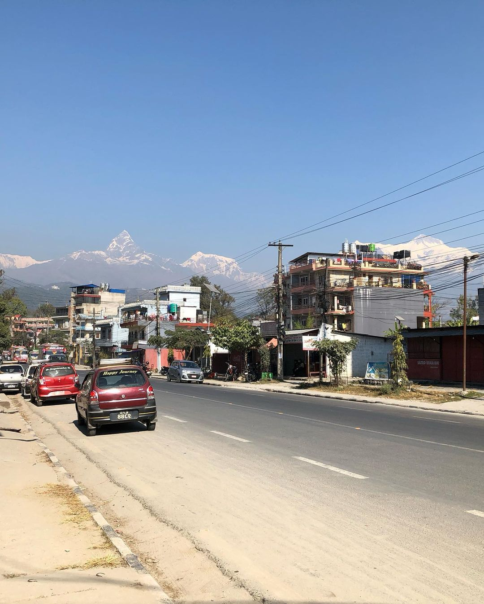

Embarking on one's first journey abroad holds a special place in the heart, a sentiment shared by both my mother and me. Prior to 2022, neither of us had ventured beyond our country's borders nor experienced the exhilaration of flight. However, seizing the opportunity, we decided it was time to tick off this item from our bucket list. Unfortunately, my father couldn't accompany us due to an expired passport. Understanding the challenges my aging mother might face, I took extra precautions to ensure our trip would be as smooth as possible. This meant pre-booking all our accommodations, arranging for tourist-friendly transportation, and securing other necessary amenities. While this meticulous planning incurred additional costs, I deemed it a worthwhile investment in ensuring a stress-free and enjoyable journey akin to a four-star experience.
My initial impression upon arriving at Dhaka Airport was one of surprise – from the outside, it appeared quite sizable, but upon stepping inside, it struck me as rather compact. In fact, it seemed smaller than the campus of the school I was fortunate enough to attend within Dhaka city. However, this perception swiftly changed upon my arrival at Tribhuban International Airport, which was notably more diminutive than Dhaka Airport, perhaps a third of its size. Reflecting on my first airplane journey, I must confess that I felt surprisingly little. As the air hostess handed out paperwork to fill, I dutifully completed the forms, scarcely registering the sensation of the plane's takeoff. Meanwhile, my mother, sitting beside me, admitted to feeling a slight tremor of apprehension. Yet, upon landing in Dhaka, she confided that her fear had been fleeting. She reasoned that while the vast expanse of the sky might seem daunting, she ultimately accepted that some things were beyond her control, and if anything were to go amiss, she would simply need to confront it with fortitude.
Following a rather uneventful plane journey, we proceeded to our prebooked hotel in Thamel, Kathmandu. However, I found myself disenchanted with Thamel Street upon arrival. Its narrow lanes and exorbitant prices left much to be desired, evoking memories of the cramped streets of Old Dhaka. Here's a word of advice: steer clear of making purchases there unless you're prepared to overpay. Opt for purchasing a SIM card at the airport to avoid falling victim to local vendors peddling used cards, a practice reminiscent of Bangladesh's thriving trade in secondhand SIMs. But enough about the negatives. Kathmandu boasts several Durbar Squares, precisely three, each worth exploring. Additionally, scattered around Durbar Square are Hindu temples, often bustling with activity and accompanied by lively monkey troops. As a Muslim, I opted out of visiting these temples during peak times of worship, finding the crowds and rituals overwhelming. However, I'm intrigued by the prospect of revisiting Durbar Square at night during a future trip to Nepal. The atmosphere at the Pasupathinath Temple is equally captivating, albeit for different reasons. Here, mischievous monkeys abound, delighting in playing pranks on unsuspecting visitors. I once witnessed a comical scene unfold as a bridal photoshoot was interrupted by a cheeky monkey snatching the bride's veil and dashing off, sparking a frantic pursuit involving the groom and photography team. Sensing the chaos escalating, I made a swift exit from the area. Regrettably, Thamel failed to captivate me with its offerings, or lack thereof.
On the flip side, Pokhara offers a vibrant array of activities, from exhilarating adventures like paragliding and bungee jumping to the serene beauty of Phewa Lake nestled within the city. It's a destination that tops everyone's list when visiting Nepal. However, the journey by car from Kathmandu to Pokhara, spanning around 7 to 8 hours, can be quite exhausting. Fortunately, the Nepalese government is diligently improving the winding roads through the hills, which should significantly reduce travel time by 2 to 3 hours once completed. Alternatively, traveling to Pokhara by plane offers a quicker option, though internal air services in Nepal still carry some safety concerns. For those visiting Phewa Lake, the best times to experience its enchanting beauty are at dawn or dusk, when the lakeside comes alive with activity. Boats of various sizes are available for hire, but it's important to respect the local customs—diving into the sacred lake is strictly prohibited. In Nepal, temples abound, and Phewa Lake is no exception. Nestled on a small island in the lake's center lies a temple, adding to the area's spiritual ambiance. If you're fortunate, you may catch a glimpse of the majestic Himalayan Range from the lakeside. Additionally, for an unforgettable experience, hot air balloon rides are also offered, adding another dimension to Pokhara's allure.
... to be continued.